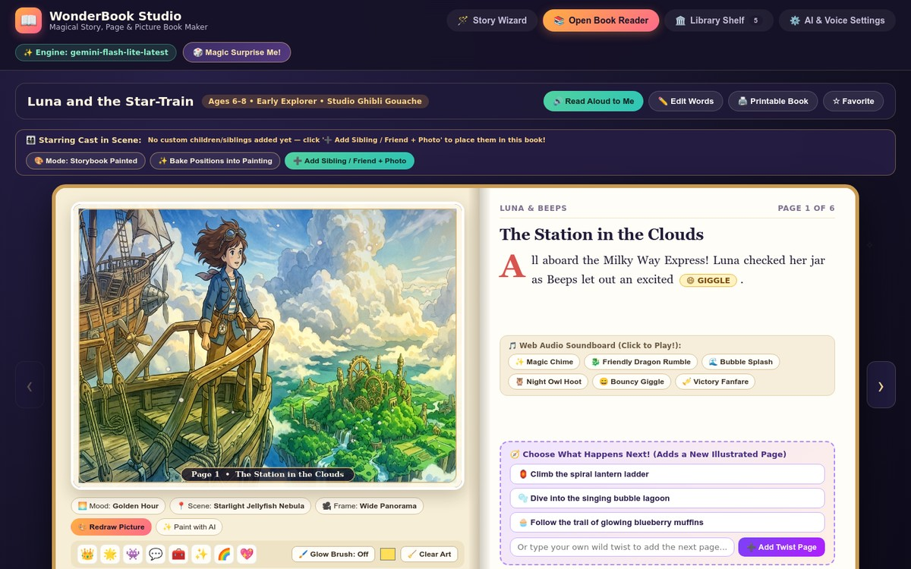
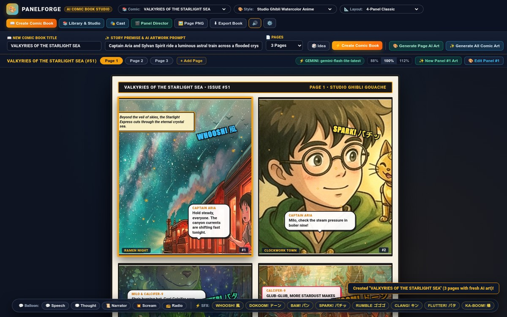

NeonTouch Synth: 10-Finger Ephemeral Light & Polyphonic Cyberdeck Studio
Zero-dependency 10-finger ephemeral neon light instrument and Night City Cyberdeck DJ studio (Port 8112) engineered for 60 FPS Web Audio polyphonic synthesis without camera or microphone permissions.

ElectroForge 3D: Interactive Electronics, Breadboard & Robotics Lab
Interactive 3D electronics, 830-point breadboard, microcontroller, and robotics engineering lab (Port 8102) powered by real-time Modified Nodal Analysis (MNA), 12 Blender 5.0.1 .glb hardware models, 4 articulated robotic rigs, 4-Ch oscilloscope, 8-Ch logic analyzer, and 24V thermal overload burnout.

Zero-Leak RAG Lab: Identity-Aware Enterprise Grounding & RLS Studio
Interactive Enterprise AI Grounding & Security Architecture Workbench defeating the “Confused Deputy” RAG data-leakage anti-pattern via Pre-Retrieval OAuth/IAM ACLs, BigQuery Row-Level Security (RLS), Hybrid Sparse BM25 + Dense Vector Reciprocal Rank Fusion (RRF), Prompt-Injection & Citation Guardrails, and a RAG vs. Long-Context vs. Fine-Tuning trade-off calculator.

TrustForge SOC 2: Autonomous SOC 2 Type II Audit, 7-Gate Exception Triage & Privacy Crosswalk Studio
Autonomous AICPA SOC 2 Type I & Type II readiness, 5 Trust Services Categories (28 criteria + 2022 Revised Points of Focus) continuous evidence engine, 7-Gate adversarial exception triage (True Positive vs. Compensating Control False Positive), subservice vendor CUEC & Bridge-Letter analyzer, and ISO 27001 / NIST 800-53 / HIPAA / GDPR / PCI-DSS crosswalk studio with 3-run SHA-256 determinism.

SkillForge AI: Web-App-to-LLM-Skill & MCP Compiler Studio
Local-first Web-App-to-LLM-Skill (SKILL.md) and Multi-Skill MCP JSON-RPC 2.0 Compiler Studio & Live Agent Testbench. Scans local web apps (including bundled TaskPulse) or OpenAPI/GRC blueprints, compiles 5-Gate & 3-run SHA-256 verified skill bundles, and runs live 3-stage Local Ollama or Cloud LLM tool execution.

Outbreak 3D ("Ant Farm"): Autonomous Human-Zombie Colony & Social Drama Simulation Game
Outbreak 3D ("Ant Farm" — Season Two) is a deterministic, seeded 3D multi-agent survival and social-drama simulation game. Designed as a living glass-box "ant farm," 30 named survivors with 12 personality archetypes and 10 dynamic emotional factors autonomously scavenge a procedural 3D town, fortify a walled sanctuary, form romances, cliques, love triangles, and blood feuds, and fight to survive against 9 classes of mutating zombies, winter blizzards, and midnight generator blackouts.

AeroForge 3D: Fighter Jet CAD, 67-Part Teardown, Mach CFD & 3D Dogfight Simulator
AeroForge 3D is an interactive 3D aerospace engineering workbench, 67-part mechanical teardown studio, supersonic wind-tunnel solver, and playable 3D dogfight simulator spanning 113 years of combat aviation (1917–2030). Inspect 26 historical and modern fighter aircraft across five eras and three superpowers (USA, RUS, CHN), re-sculpt wing sweep and stealth shaping, scrub a 0–100% exploded view across 12 internal bays, and fly your custom airframe in live 3D aerial combat.

BattleBot Designer: 3D Combat-Robot CAD Studio, Factory Floor & Arena Simulator
BattleBot Designer is an interactive 3D combat-robot engineering workbench, piece-by-piece Factory Floor assembler, and Arena combat simulator. Every robot is modeled as a connected graph: 17 chassis architectures expose five universal hardpoints (Front, Top, Rear, Left, Right), any of 36 kinetic, control, thermal, electrical, projectile, or passive modules can bolt onto any mount, and a swept-volume interference solver automatically blocks only combinations whose motion envelopes or lines of fire physically clash.

Pelagos OC-8 & 18-DOF Hexapod: 3D Biomimetic Robotics Teardown Field Simulator
Pelagos OC-8 & 18-DOF Hexapod is an interactive 3D biomimetic robotics field simulator and teardown workbench built on a 1600×900 8-panel engineering HUD. Operators can switch across a 9-unit biomimetic fleet, scrub a continuous 3D teardown slider, isolate individual mechanical sub-assemblies, inspect X-Ray and thermal heatmaps, inject subsystem faults, and export the entire simulator as a self-contained offline HTML bundle.

LingoForge: 10-Language Gamified Learning, Half-Life SRS & AI Roleplay Studio
LingoForge is an independent, self-hosted 10-language learning web application and CLI built with Flask and SQLite. It combines CEFR-aligned skill trees, 8 interactive exercise mechanics, voiced dialogue stories, non-Latin script trainers, Half-Life Regression spaced repetition, and Levenshtein typo-tolerant grading with AI-powered grammar explanations, live conversational roleplay missions, and on-demand custom unit synthesis.

WonderBook Studio: AI Children's Storybook Creator & 3D Illustrated Reader
WonderBook Studio is an interactive AI children's picture book creation studio and 3D illustrated reader. Every storybook, character, and spread is generated on the fly with bespoke AI artwork—combining live Pollinations/Flux neural illustration synthesis, OpenAI/Gemini multimodal pipelines, and a procedural multi-layer Studio Ghibli & glowing watercolor SVG scene compositor so that no two books or spreads ever look the same. Includes an interactive character & art-style wizard, one-click AI Artwork regeneration per page or full book, word-highlighted Web Speech read-aloud narration, and print-ready HTML/PDF storybook export.

PanelForge: Studio Ghibli & AI Comic Book / Manga Studio
PanelForge is an end-to-end AI comic book, graphic novel, and shonen manga creation studio. Writers pitch a concept, select an art style (Studio Ghibli, Shonen Manga, American Superhero, Cyberpunk Noir, Watercolor Fable, or Franco-Belgian Ligne Claire), and PanelForge scripts multi-page issues while synthesizing bespoke panel artwork with dynamic speedlines, cel-shaded characters, atmospheric lighting, and movable SVG speech balloons, thought clouds, and SFX lettering.